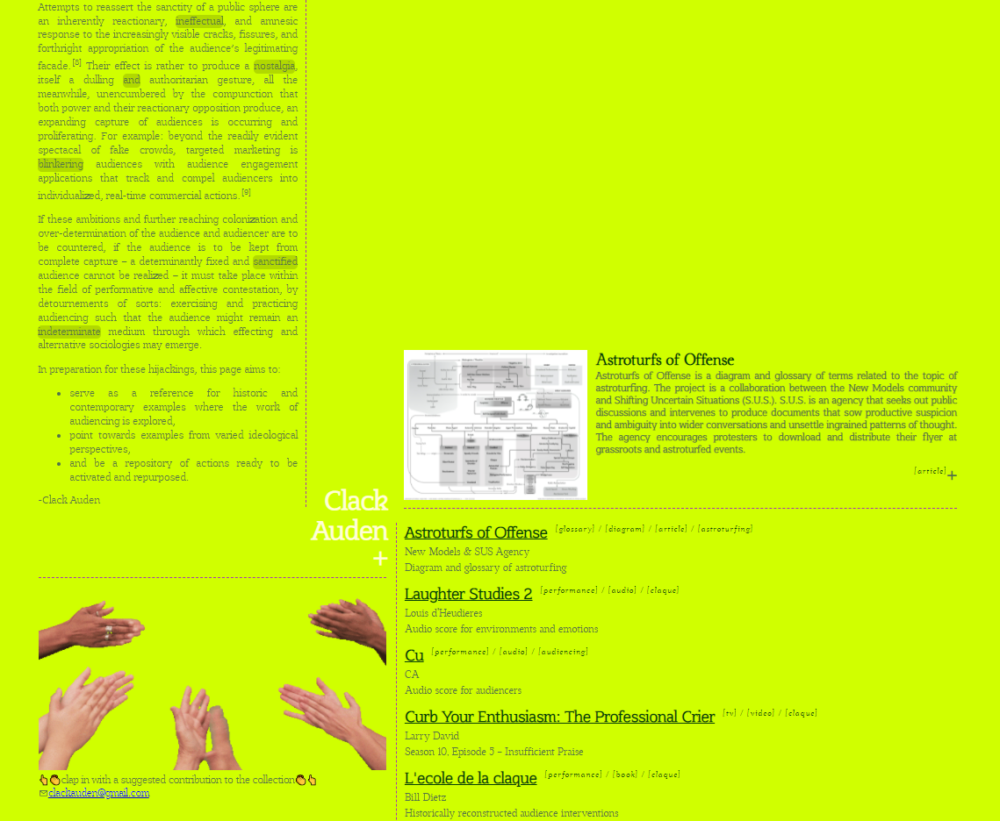
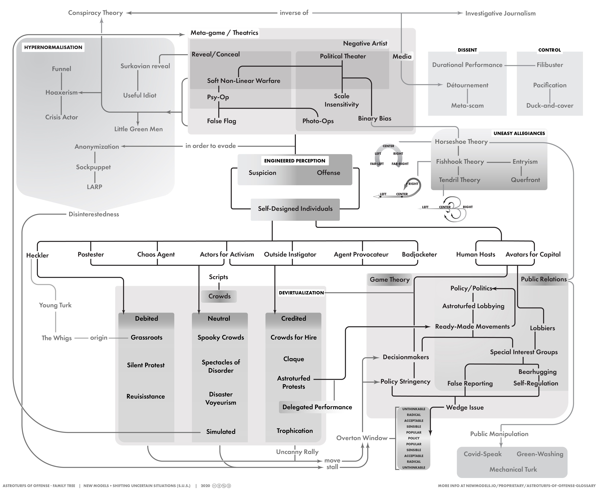
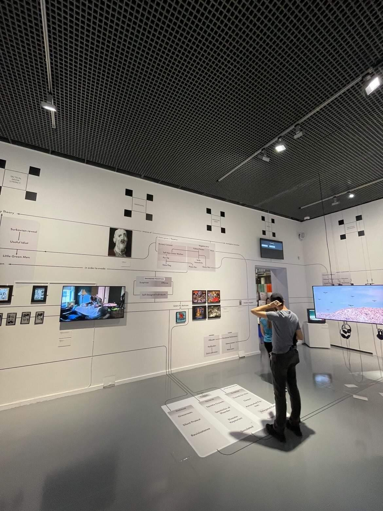

Clack Auden
Clack Auden researches and produces creative representations of and interventions into audience interactions. Areas of research include the history of the claque, crowds for hire, verbatim theater, and audio scores composed for prompting audience interactions and performing infrastructural work.

